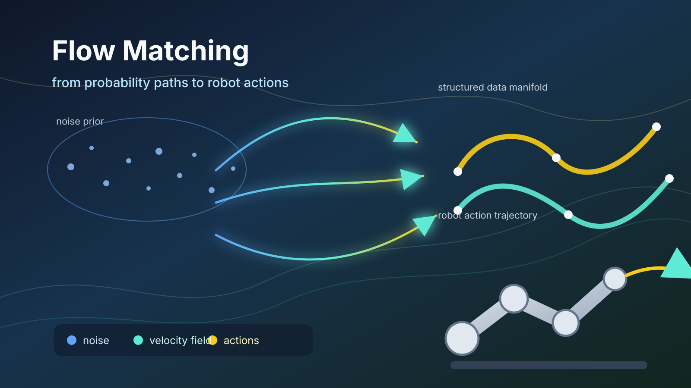

Flow Matching 가이드북¶

머릿말¶
생성 모델을 공부하다 보면 어느 순간 diffusion model, score, SDE(Stochastic Differential Equation, 확률미분방정식), ODE(Ordinary Differential Equation, 상미분방정식), probability path, velocity field 같은 개념이 한꺼번에 등장한다. 각각은 따로 보면 이해할 수 있을 것 같지만, 실제 논문을 읽거나 구현을 따라가려 하면 서로 어떻게 연결되는지 흐릿해지기 쉽다. 이 책은 그 흐릿한 지점을 정리하기 위해 쓰였다.
이 책의 목적은 Flow Matching을 단순히 “diffusion보다 빠른 새 생성 모델”로 소개하는 것이 아니다. 더 중요한 목표는 생성 모델을 분포를 움직이는 문제로 이해하고, diffusion과 Flow Matching을 같은 지도 위에서 비교할 수 있게 만드는 것이다. 독자가 이 책을 읽고 나면 probability path, velocity field, Conditional Flow Matching, ODE sampling이 각각 어떤 역할을 하는지 설명할 수 있어야 한다.
또 하나의 중요한 독자상은 로보틱스와 AI에 관심이 많은 개발자와 연구 지망자다. 최근 로봇 정책은 deterministic controller만이 아니라 action distribution을 생성하는 모델로 바뀌고 있다. Diffusion policy, VLA(Vision-Language-Action), action expert, Flow Matching policy는 모두 이 변화와 연결된다. 이 책은 Flow Matching의 기본 수학과 구현 감각을 쌓은 뒤, 로보틱스 응용까지 자연스럽게 이어지도록 구성했다.
이 책의 특징¶
- 수학을 건너뛰지 않되, 수식만으로 밀어붙이지 않는다. 확률, 조건부 분포, ODE/SDE, continuity equation, score를 Flow Matching에 필요한 만큼 천천히 설명한다.
- diffusion과 Flow Matching을 경쟁 구도로만 보지 않는다. 두 방법이 noise-to-data 생성 문제를 어떤 다른 언어로 설명하는지 비교한다.
- 수식과 구현을 연결한다. \(x_t\), \(u_t\), \(v_\theta(x_t,t)\) 같은 표기가 코드에서 어떤 tensor와 함수로 나타나는지 계속 연결한다.
- 그림과 도식 중심의 설명을 지향한다. 각 장마다 본문에 넣을 시각 자료 후보를 함께 제안해, 웹 책으로 확장하기 쉽게 한다.
- 로보틱스와 AI 응용을 포함한다. action chunk, trajectory, VLA action expert, safety, equivariance 같은 로봇 응용 흐름을 별도 장으로 정리한다.
- 논문 독해를 목표로 한다. 여러 논문을 나열하기보다, 각 논문을 어떤 질문으로 읽어야 하는지 로드맵과 체크리스트를 제공한다.
전체 구성¶
프롤로그¶
0장. 생성 모델은 어떻게 여기까지 왔을까?
생성 모델의 큰 흐름을 VAE(Variational Autoencoder, 변분 오토인코더), GAN(Generative Adversarial Network, 생성적 적대 신경망), normalizing flow, diffusion, Flow Matching으로 이어지는 문제의식으로 설명한다. 이 장의 목표는 독자가 왜 noise에서 data로 가는 path를 배워야 하는지 납득하게 만드는 것이다.
1부. 생성 모델을 위한 수학 언어¶
1장. 생성 모델을 위한 확률 언어
확률변수, 샘플, 분포, density, expectation, Gaussian noise를 소개한다. 이후 계속 등장하는 \(p_0\), \(p_1\), \(p_t\), \(x_t\) 표기를 이해하기 위한 기초를 만든다.
2장. 조건부 확률과 주변화
조건부 분포와 marginal distribution을 설명한다. Conditional Flow Matching에서 조건부 path와 marginal path가 어떻게 연결되는지 이해하기 위한 핵심 장이다.
3장. 분포를 움직인다는 생각
시간에 따라 분포가 변한다는 관점을 다룬다. sample trajectory, distribution trajectory, vector field, velocity field, ODE의 직관을 연결한다.
4장. 노이즈가 들어간 동역학
deterministic dynamics와 stochastic dynamics를 비교하고, Brownian motion, SDE, diffusion forward/reverse process를 소개한다. Diffusion을 Flow Matching과 비교하기 위한 배경이다.
5장. 확률 질량 보존과 score
continuity equation과 score를 설명한다. score field와 velocity field의 차이를 이해하면 diffusion과 Flow Matching의 차이가 더 선명해진다.
2부. Flow Matching의 핵심 아이디어¶
6장. Flow Matching의 한 문장 정의
Flow Matching을 확률 경로 \(p_t\)와 속도장 \(u_t(x)\)를 맞추는 문제로 정의한다. 학습과 sampling이 어떻게 분리되는지 설명한다.
7장. Conditional Flow에서 Marginal Flow로
조건부 경로를 여러 개 모으면 전체 분포의 흐름이 된다는 아이디어를 다룬다. CFM(Conditional Flow Matching)이 왜 실용적인지 이해하는 핵심 장이다.
8장. Conditional Flow Matching Loss 뜯어보기
CFM(Conditional Flow Matching) loss를 tensor shape와 PyTorch 학습 루프 관점에서 해부한다. \(x_t\), 목표 속도 \(u_t\), 모델 출력의 관계를 코드와 연결한다.
9장. Diffusion과 Flow Matching 비교
두 방법의 공통점과 차이를 정리한다. score, noise prediction, velocity prediction, probability flow ODE가 어떻게 연결되는지 비교한다.
3부. 구현과 실험¶
10장. 2차원 Toy Example로 Flow Matching 실습하기
작은 2D 데이터에서 Flow Matching 학습과 ODE sampling을 눈으로 확인한다. velocity field, trajectory, step 수 비교를 통해 구현 감각을 만든다.
11장. PyTorch Training Loop 설계
dataset, path sampler, model, trainer, solver를 어떻게 분리할지 다룬다. 재현 가능한 실험 구조와 logging/checkpoint 기준을 정리한다.
12장. 작은 이미지 예제로 확장하기
2D toy example에서 이미지 tensor로 확장한다. normalization, U-Net(인코더-디코더형 convolution network), time embedding, sample grid, ODE step 비교를 설명한다.
13장. Path Parameterization 선택
직선 경로, Gaussian path, optimal transport, rectified flow 관점을 비교한다. 경로 선택이 학습 target과 sampling 효율에 어떤 영향을 주는지 다룬다.
14장. Sampling과 ODE Solver
Euler, midpoint, NFE(Number of Function Evaluations, 함수 평가 횟수), step 수 실험을 설명한다. 모델 문제와 solver 문제를 구분하는 기준을 제시한다.
4부. 논문 로드맵과 확장¶
15장. 논문 로드맵
Diffusion, score-based model, Flow Matching, CFM, Rectified Flow, OT(Optimal Transport, 최적 수송), 조건부 생성 논문을 어떤 순서와 질문으로 읽을지 정리한다.
16장. Guidance와 Conditional Generation
조건부 생성과 classifier-free guidance를 Flow Matching 관점에서 설명한다. class/text condition, null condition, guidance scale의 trade-off를 다룬다.
17장. Flow Matching의 확장 지형
이산 데이터, manifold, multimodal generation, 과학 데이터 등으로 Flow Matching이 어떻게 확장되는지 큰 지도를 제공한다.
18장. 로보틱스에서의 Flow Matching
로봇 정책을 조건부 생성 모델로 보는 관점에서 Flow Matching 응용을 정리한다. action chunk, trajectory planning, VLA action expert, safety, equivariance, 최신 연구 동향을 다룬다.
부록¶
부록 A. 참고문헌과 읽기 지도
본문에서 언급한 주요 논문과 자료를 질문 중심으로 묶는다. Flow Matching 기본 자료, diffusion/score 자료, rectified flow, 로보틱스 응용 논문을 어디서 읽어야 할지 안내한다.
읽는 방법¶
수학이 약한 독자는 1-5장을 건너뛰지 않는 편이 좋다. 다만 첫 번째 읽기에서 모든 수식을 완벽히 따라갈 필요는 없다. 각 수식이 무엇을 설명하는지, 그림으로는 어떤 모습인지, 코드에서는 어떤 tensor로 나타나는지를 중심으로 읽으면 된다.
구현에 관심이 많은 독자는 6-9장까지 읽은 뒤 10-14장을 먼저 실습 중심으로 읽어도 좋다. 로보틱스와 AI에 관심이 많다면 18장을 먼저 훑어보고, 다시 앞 장으로 돌아와 필요한 수학과 Flow Matching 개념을 채우는 방식도 가능하다.